Blog de Kévin Polisano
Kévin Polisano
Carnet de notes
Categories
All
(28)
Laplacien
(1)
R
(1)
animation
(1)
enigme
(2)
handicap
(7)
impôt
(1)
impôts
(2)
latex
(2)
linux
(2)
matlab
(4)
quarto
(1)
site
(2)
wordpress
(1)
youtube
(1)
zététique
(1)
énigme
(1)
Migrer son blog Wordpress vers un blog Quarto statique hébergé gratuitement avec Github Pages
site
quarto
Mon site perso fait peau neuve !
Dec 26, 2024
Kévin Polisano
Analyse des arguments de Sophie Cluzel opposée à la déconjugalisation de l’AAH
handicap
Contexte
. Le jeudi 18 février 2021, la secrétaire d’Etat chargée des personnes handicapées, Sophie Cluzel, a été auditionnée par la commission des Affaires sociales, et a…
Mar 7, 2021
Kévin Polisano
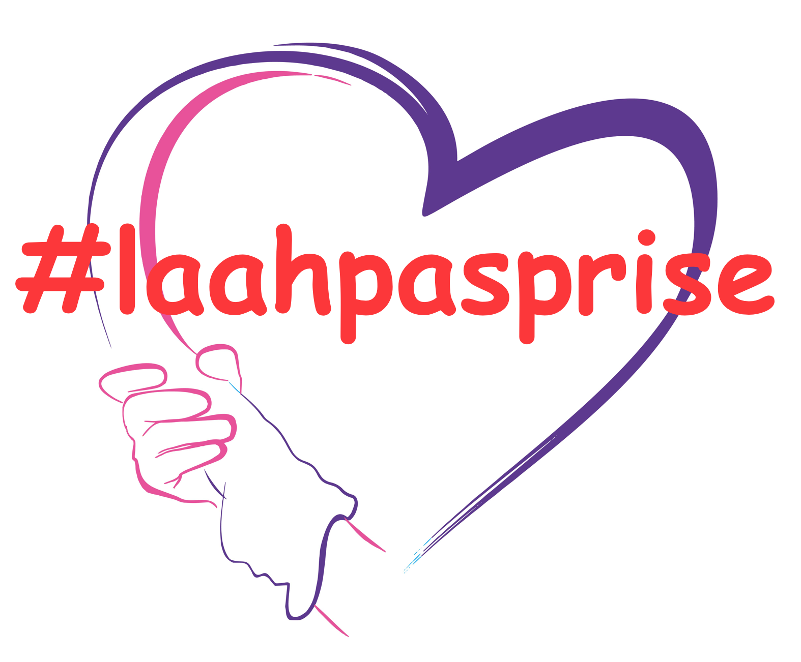
Manifeste pour l’accessibilité de la vie de couple
handicap
Le
prix de l’amour
est le nom que l’on attribue à la situation de
dépendance financière
dans laquelle se retrouve bien souvent les bénéficiaires de l’AAH (allocation adulte…
Mar 6, 2019
Kévin Polisano
Rédiger efficacement sa thèse avec LaTeX : Maîtriser son éditeur préféré
latex
Rédiger sa thèse
n’est pas un long fleuve tranquille. Cette étape nécessite de prendre du recul sur les 3 années (ou plus !) de recherches effectuées, de rassembler ses…
May 11, 2018
Kévin Polisano
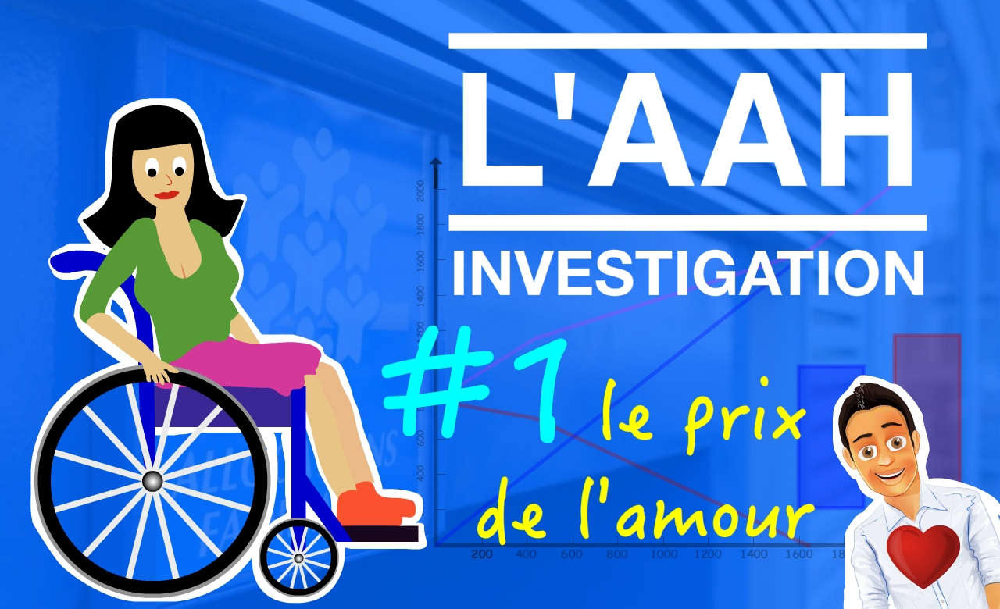
L’AAH INVESTIGATION – Le prix de l’amour
handicap
La vie en couple reste encore inaccessible pour un grand nombre de personnes handicapées, et pour cause, le mode de calcul de l’AAH (l’allocation aux adultes handicapés)…
Jan 3, 2017
Kévin Polisano
Backup de Wordpress sur Free
site
Lorsque vous faites une sauvegarde (un backup) de votre site, il faut en fait deux choses qui communiquent (et donc sont indispensables) et ne se situent pas au même endroit :
Oct 29, 2016
Kévin Polisano
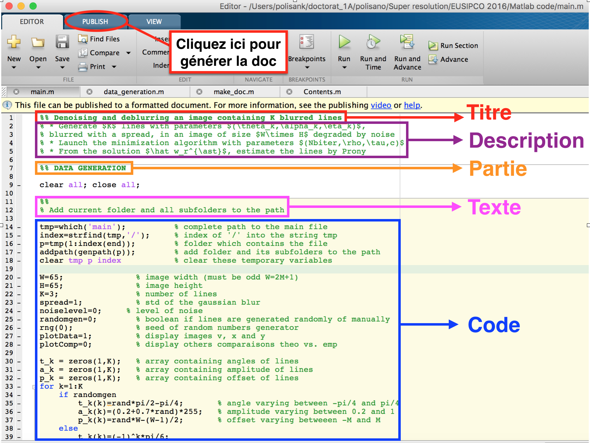
Créer une documentation et/ou une Toolbox dans Matlab
matlab
Cet article va vous expliquer comment créer une jolie doc pour vos programmes Matlab 🙂
Mar 3, 2016
Kévin Polisano
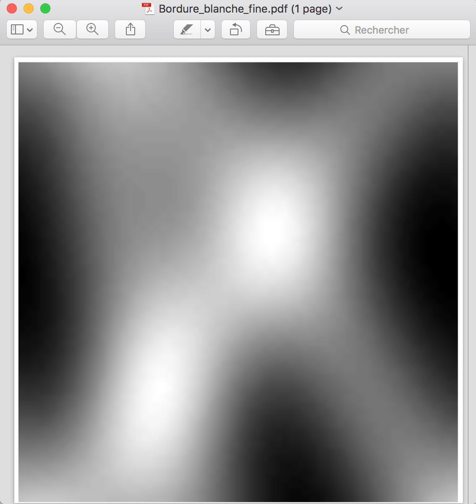
Supprimer la bordure blanche d’une image EPS en modifiant la BoundingBox
matlab
Lorsque l’on exporte une image au format
.eps
il arrive qu’un cadre blanc, une bordure blanche, entoure l’image que l’on visualise (dans mon cas avec le lecteur Aperçu de…
Jan 31, 2016
Kévin Polisano
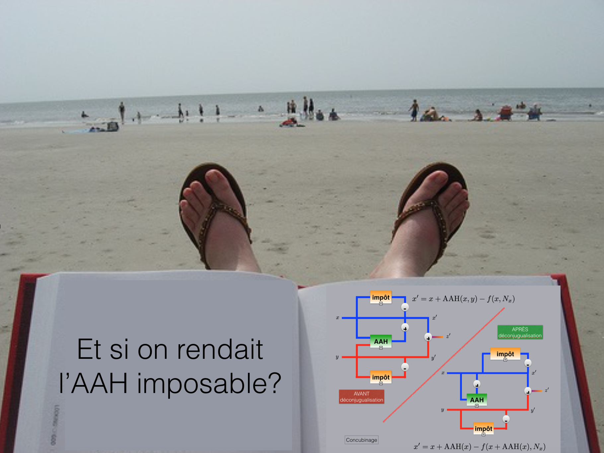
Et si l’on rendait l’AAH imposable ?
handicap
Non je ne suis pas (de nouveau) tombé sur la tête, et je n’écris pas non plus cet article suite à une insolation 😉
Sep 9, 2015
Kévin Polisano
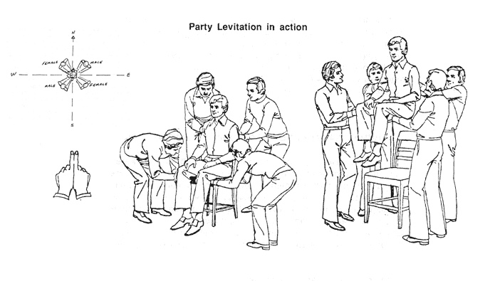
À deux doigts de la lévitation ! [Light as a feather, stiff as a board]
zététique
Au cours d’une formation de l’école doctorale, j’ai eu l’occasion de suivre un cours de zététique, qui est une displicine scientifique qui étudie de manière rationnelle les…
Jun 7, 2015
Kévin Polisano
Impôts 2015 : explication du calcul pour personne valide et handicapée
impôt
Apr 14, 2015
Kévin Polisano
Détection de contours par Laplacien
Laplacien
Un billet suite à la question d’une étudiante au sujet du TP de traitement d’image.
Apr 8, 2015
Kévin Polisano
Le mariage pour tous, sauf pour les personnes handicapées…
handicap
Le 17 mai 2013, la loi n° 2013-404 ouvre
le droit au mariage, pour tous. Ou presque !
Jul 25, 2014
Kévin Polisano
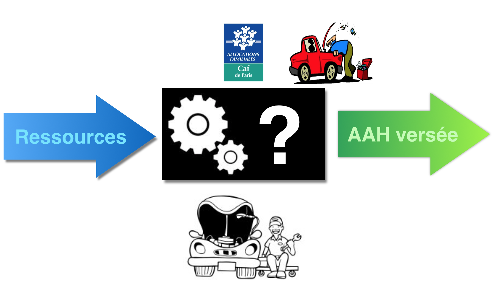
L’AAH pour les nuls, comprendre par l’exemple
handicap
Vous êtes nombreux sur les forums à vous demander comment l’AAH (Allocation Adulte Handicapé) est calculée par la CAF, suivant votre situation familiale et vos revenus. Les…
Jul 21, 2014
Kévin Polisano
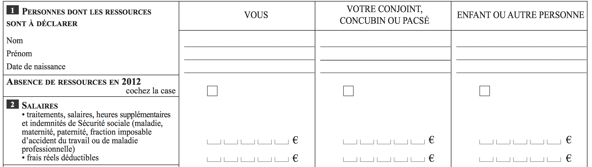
Ambigüité sur la nature des ressources à déclarer à la CAF pour le calcul de l’AAH
handicap
Pour pouvoir prétendre aux aides sociales délivrées par la Caisse d’Allocations Familiales (dont fait partie l’AAH = Allocation Adulte Handicapée), vous devez déclarer vos…
Jul 17, 2014
Kévin Polisano
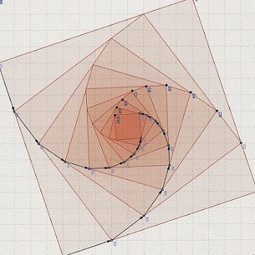
Casse-tête n°3 : une moyenne bien entourée
énigme
On m’a récemment suggéré un joli problème tiré des OIM 2014 qui ont eu lieu le 8 juillet dernier. L’énoncé est le suivant :
Jul 16, 2014
Kévin Polisano
Quels impôts pour les personnes handicapées ?
impôts
Si comme moi vous n’avez rien compris la première fois que vous avez du déclarer vos revenus aux impôts, cet article est fait pour vous !
Jul 15, 2014
Kévin Polisano
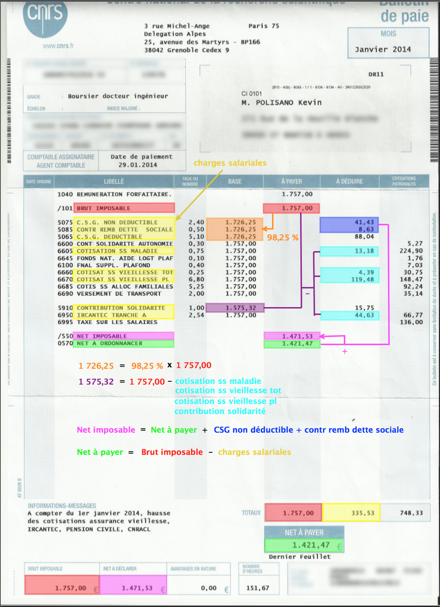
Comprendre son bulletin de paie
impôts
Vous connaissez certainement tous
la différence entre le salaire brut et le salaire net
, mais :
Jul 6, 2014
Kévin Polisano
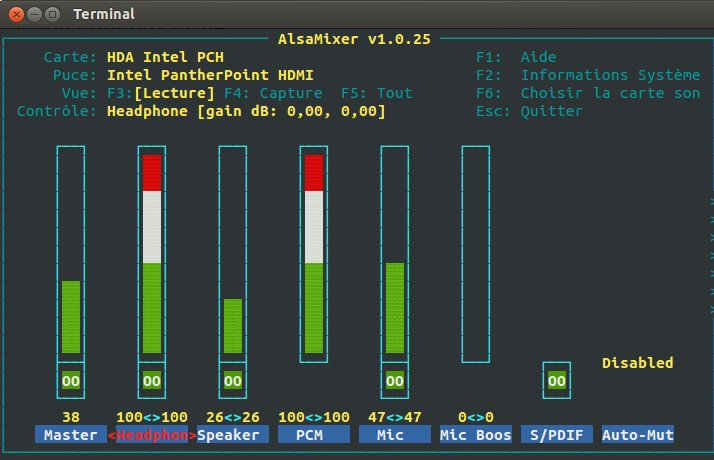
Son fonctionnant aléatoirement sous Ubuntu 12.04
linux
Fréquemment il m’arrive qu’il n’y ait plus de son, sans raison apparente, et seul un (ou plusieurs) reboot permet de rétablir le son.
Oct 21, 2013
Kévin Polisano
Google analytics pour Wordpress hébergé sur free.fr
wordpress
Google Analytics
vous permet d’obtenir tout un tas d’informations vraiment utiles et grâce auxquelles vous pourrez améliorer les performances de votre blog.
Oct 20, 2013
Kévin Polisano
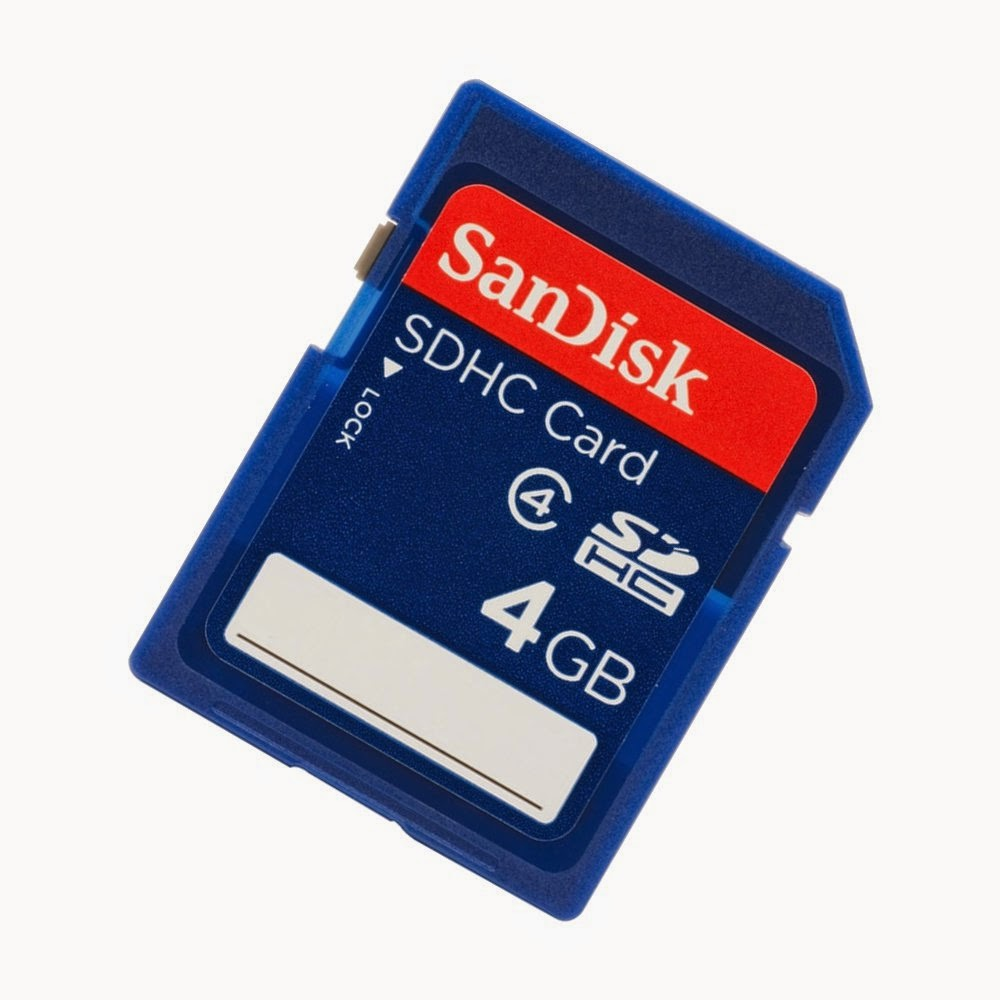
Carte mémoire SD Realtek non reconnue sous Linux
linux
Par défaut ma carte mémoire SD n’était pas reconnue sous Ubuntu, ce qui m’obligeait à redémarrer sous Windows pour transférer mes photos/vidéos. Le problème est en fait lié…
Oct 17, 2013
Kévin Polisano
Comment télécharger une vidéo ou playlist youtube sous linux ?
youtube
Si vous suivez ce tutoriel, vous serez ensuite capable de télécharger n’importe quelle vidéo provenant des sites suivants :
Aug 17, 2013
Kévin Polisano
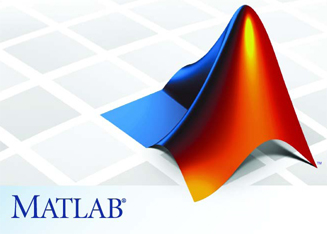
Comment installer et utiliser ADiMat pour Matlab ?
matlab
ADiMat signifie
A
utomatisches
Di
fferenzieren für
Mat
lab, c’est donc un programme tournant sous Matlab qui permet de “différencier” (calculer la différentielle, ou “dériver”)…
Jul 24, 2013
Kévin Polisano
Comment piloter R à partir de Matlab et vice versa ?
matlab
R
Le logiciel Matlab est très populaire dans le domaine des mathématiques, de l’ingénierie et de la recherche. Il regroupe une vaste communauté de scientifiques qui…
Jun 5, 2013
Kévin Polisano
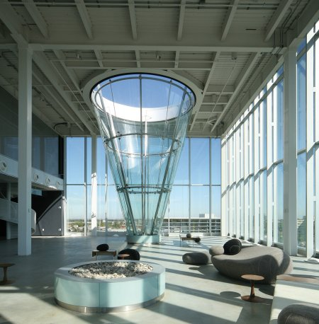
Casse-tête n°2 : une piscine originale
enigme
On dispose d’une piscine dont la forme est un cône de révolution : la pointe est fixée au sol, et la hauteur du cône est verticale. Nous allons remplir celle-ci avec de…
May 20, 2013
Kévin Polisano
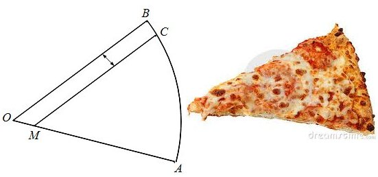
Casse-tête n°1 : la pizza
enigme
Lorsque l’on mange pizza entre amis, nous apprécions goûter un petit morceau de la pizza de chacun. C’est pourquoi j’ai l’habitude sur ma part de pizza de rayon
\(r=OB\)
de…
May 13, 2013
Kévin Polisano
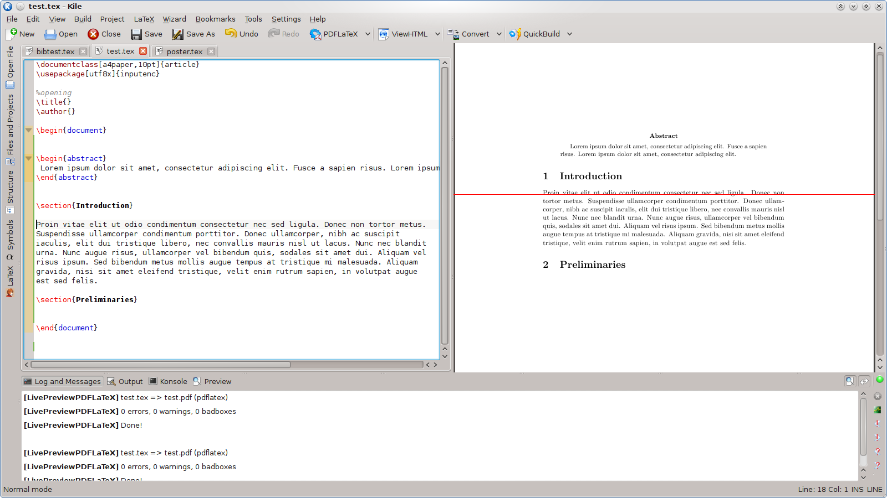
Comment installer Kile Live Preview ?
latex
Kile est un éditeur puissant pour rédiger des documents en LaTeX. C’est LaTeX qui une fois le fichier
compilé,
génère un document PDF avec une mise en forme parfaite et…
Apr 2, 2013
Kévin Polisano
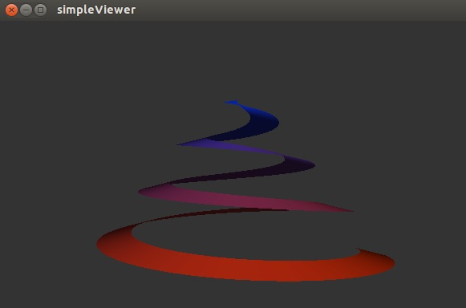
Comment installer la librairie libQGLViewer sous Linux ?
animation
C’est une librairie écrite en C++ basée sur Qt qui simplifie l’utilisation d’OpenGL, notamment en donnant la possibilité de bouger la caméra dans la scène 3D à l’aide de la…
Mar 28, 2013
Kévin Polisano
No matching items